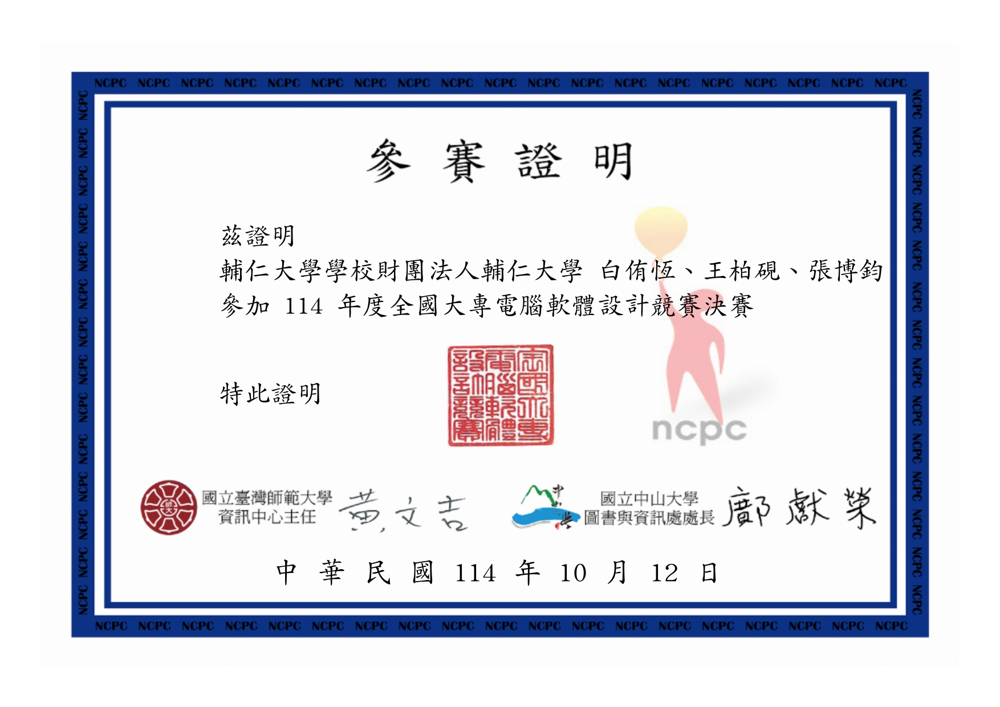
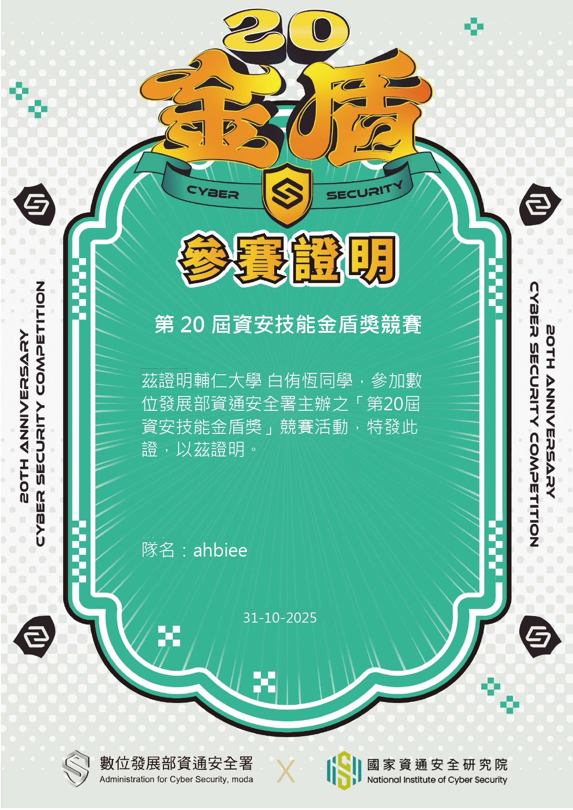

專業與興趣
競賽程式設計
(目前正鑽研中)
熱愛學習各種演算法
提升競賽問題解決能力。
經歷
- CPE 程式能力檢定 3題
- NCPC 全國大專程式設計競賽決賽
- 持續精進演算法能力

在程式競賽的過程中，我學會了如何在壓力下思考和解決複雜問題。每一次的比賽都是成長機會。
資訊安全
探索網路安全的奧秘
致力於資安知識的學習。
經歷
- Harvard CS50 網路安全課程
- 參加資訊安全研究社
- 持續關注最新資安趨勢

資訊安全是一個永無止境的學習領域，透過實作與研究不斷提升技能與敏銳度。
人工智慧
探索 AI 的無限可能
致力於理論與實作的結合。
經歷
- 清華 MOOCS 人工智慧導論
- 使用 AI 了解其應用能力
- 持續探索 AI 應用領域

人工智慧領域日新月異，我樂於透過專案與實作深化理解並探索應用場景。